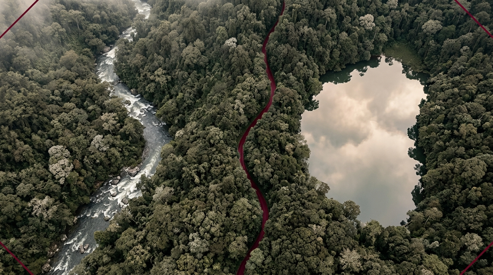

PLANO 1 · 0:00 - 0:20
El río y el estanque desde arriba
0:00 / 6:20
Para el Informe Final y Sustentación: Esta escena conecta con la brecha de 9 años (2008–2017) en Los Cedros. Le muestra por qué una norma válida puede no ser eficaz en los hechos y cómo la teoría tridimensional de Miguel Reale cierra el círculo que empezó en septiembre.
Guion Sincronizado
Reparto de Voces
E
Eugen Ehrlich (Czernowitz, 1862)
Sociología jurídica y Derecho vivo: el centro de gravedad del Derecho está en la sociedad misma, no en los códigos.
K
Hans Kelsen (Praga, 1881)
Reaparece para conceder: la eficacia general es presupuesto del sistema, pero defiende que una norma no aplicada es Derecho incumplido que permite demandar.
R
Miguel Reale (São Paulo, 1910)
Teoría tridimensional: hecho, valor y norma en implicación y polaridad. El cierre del ciclo formativo.